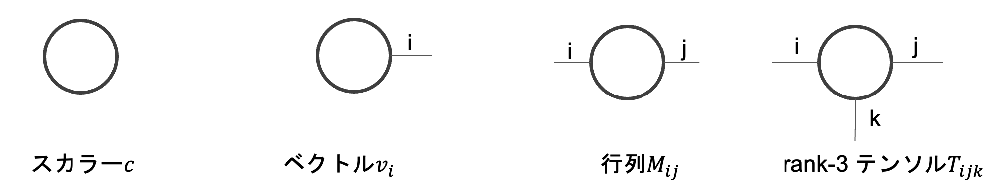

テンソルネットワークでまず最初に学ぶべき基本的な事項をまとめました。
目次
テンソルネットワークとは
まずテンソルとは、ベクトル(1次元)や行列(2次元)を3次元以上にも一般化したもの。テンソルネットワークとはテンソルをネットワーク状に展開し、ある状態を表したもの。それは例えば量子状態だったり、統計力学のイジングモデルだったりする。
テンソルネットワークを用いて状態を表現することで計算量を格段に削減できることが知られている。例えばテンソルネットワークは量子計算の古典シミュレーション手法として注目を集めているが、これは量子状態をテンソルネットワークにより効率的に表現でき、指数関数的に大きい計算量を古典コンピュータでも扱えるレベルに落とすことができるためである。
ダイアグラム表記
テンソルネットワークは式の形式で書くと見た目が複雑で全体像が把握しにくいのでダイアグラムで表現されることが多い。
一般にn階のテンソルはn本の足が生えている図として表現される。つまりスカラーは0本、ベクトルは1本、行列は2本、3階のテンソルは3本の足が生えていることになる。
これらがつながることによりテンソルネットワークが形成される。

縮約
縮約とは行列の積を一般化したような概念である。テンソルネットワークではこの縮約と呼ばれる演算方法を工夫することにより計算量を削減する。テンソルネットワークにおける最も基本的な演算である。
行列積の式に着目する。$ {C}_{ij} $(行列Cのi, j成分)は、Aの列に対応する添字kとBの行に対応する添字kについて和をとることで得られる。これをダイアグラムであらわすとAとBからなる2つのテンソル(行列)がCという1つのテンソル(行列)にまとめられたことになる。つまりテンソル同士を繋いでいる足について和をとっていると考えられる。
これを一般にn階テンソルにも拡張したものが縮約である。図の2行目はA, B, Cという3つのテンソルを繋がっている足に対応する添字で和をとることでDという1つのテンソルにまとめている。誰とも繋がっていない足の本数が縮約後のテンソルの階数になることも分かる。
図の3列目は行列Eのk行目k列目について和をとっているのでトレースに対応する。
また繋がっている足の自由度(次元)をボンド次元という。ボンド次元は今後、テンソルネットワークの計算量を議論する上で重要な概念となる。
(例)N qubitからなる量子状態
具体例としてN qubitからなる量子状態をテンソルネットワークで表現することを考える。式で表現すると以下のようになる。
$$ | \psi\rangle = \sum_{i_1, i2, …, i_N}C_{i_1, i_2, …, i_N}|i_1 i_2…i_N\rangle $$
つまりN qubitからなる量子状態を表現するには$2^N$個の係数$C_{i_1, …, i_N}$を指定する必要がある。このように指数関数的に大きな数の値を指定する必要があることは量子多体系の解析において大きな障壁となる。
これをテンソルネットワークで表現すると以下のようになる。
このテンソルネットワークの縮約をとることで$C_{i_1, …, i_N}$を指定できる。このテンソルネットワークでは$2ND$個の係数が必要となる。ここでDはボンド次元を表す。より一般的にはテンソルネットワークでは必要な係数の個数を$O(poly(N)poly(D))$にできるということが知られている($poly$は多項式のオーダーであることを表す)。
よって必要な係数の個数を大幅に削減できたことが分かる。他にも線形代数の知識、繰り込み群、その他テンソルネットワーク独自のアルゴリズムを用いることで計算量を削減できることが知られている。
エンタングルメントとの関係
N qubitを扱う際、我々は厳密には$2^N$次元のヒルベルト空間を扱う必要があるが、先ほども述べたように一般にそのような指数関数的に大きな空間を扱うのは容易ではない。一方で我々が量子多体問題を考える際、多くの場合で興味があるのは局所的な相互作用(つまり付近の粒子とだけ相互作用がある場合、下図のA)である。つまりヒルベルト空間全体(下図のB)を考える必要はない。
より正確に言うと、局所相互作用のみを考えたときのギャップのあるハミルトニアンの低エネルギー状態に興味の対称がある場合がほとんどである。このような場合、エンタングルメントエントロピー$S$は系を分割する面積に比例することが知られている。このことは「エンタングルメントが面積則に従う」と表現される。エンタングルメントエントロピーとは2つの系のエンタングルメントの強さを表す量である。
そして面積則に従う物理状態はテンソルネットワークを使って十分に近似できることが知られている。これはテンソルネットワークを用いた表現が有用である根拠となっている。
参考文献
- Román Orús,A practical introduction to tensor networks: Matrix product states and projected entangled pair states,Annals of Physics,Volume 349,2014,Pages 117-158,ISSN 0003-4916
- Román Orús, Tensor networks for complex quantum systems, Nature Reviews Physics volume 1, pages 538–550 (2019)
- 小柴健史, 藤井啓祐, 森前智行, 観測に基づく量子計算, コロナ社